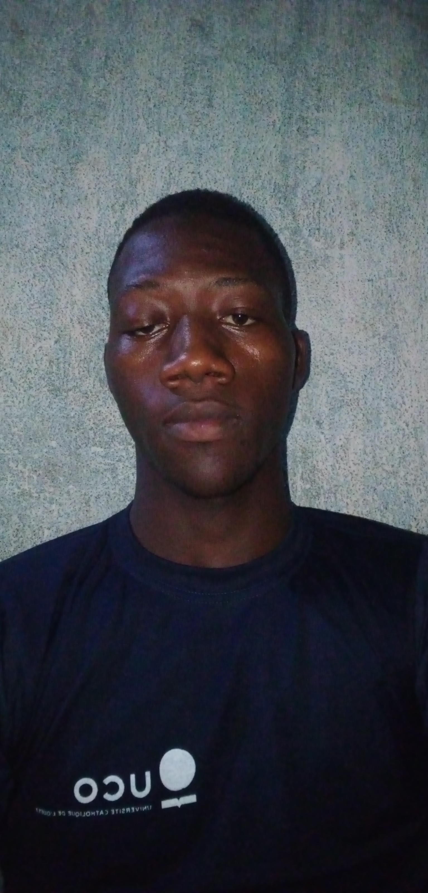

mon cv

CURRICULUM VITAE
I-ETAT CIVIL
NOM: HOUNTOKOUDE
Prénoms: Lary Enock
Date et lieu de naissance: 11 décembre 2002 à Lokossa
Sexe: Masculin
Téléphone: 94900213/91073954
Adresse électronique: laryenockh@gmail.com
II-FORMATION ACADEMIQUE
- Juillet 2020: Baccalauréat D
- Juillet 2017: Brevet d'Etude du Premier Cycle(Moderne Court)
- Juillet 2013: Certificat d'Etude Primaire
III-EXPERIENCES PROFESSIONNELLES
Breve formation initiée par l'ONG FOBAD-BENIN en 2017
IV-LOISIRS
| N° |
Loisirs |
| 1 |
Arts martiaux |
| 2 |
Jeu de dames |
| 3 |
Football |